Projects
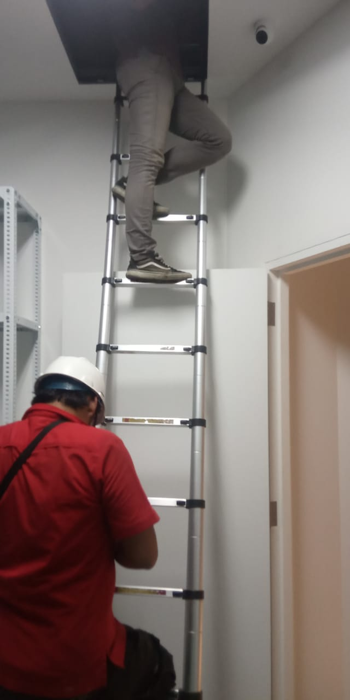
Proses Pemasangan Fiber di Mall
Sebagai teknisi NEXT1, tugas saya adalah memastikan pemasangan Internet di area Mall berjalan dengan optimal dan sesuai dengan kebutuhan klien, sehingga dapat digunakan dengan lancar dan memuaskan bagi para pengguna.
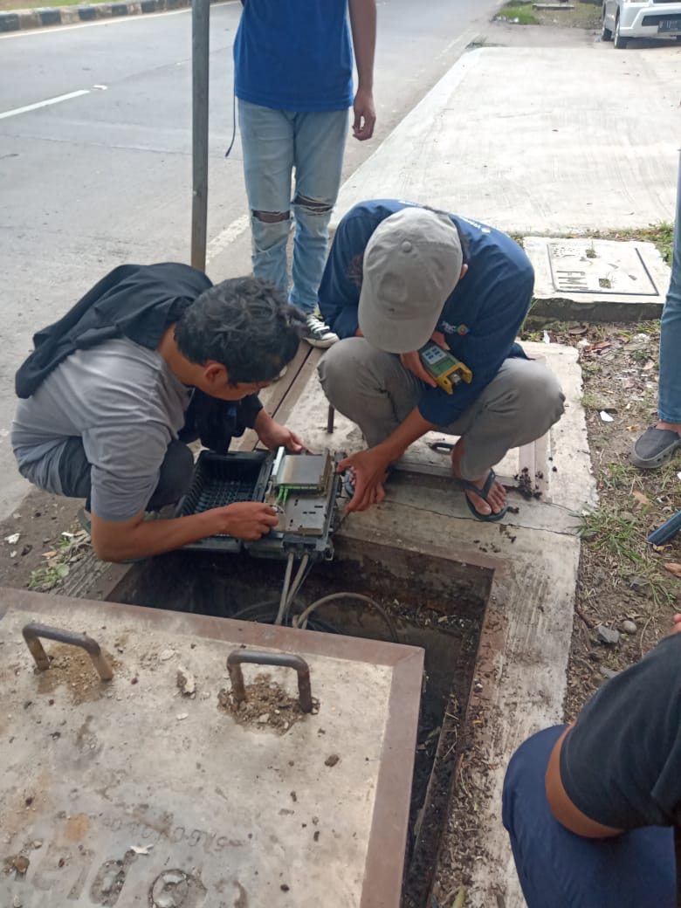
Proses Pemasangan Fiber Untuk Ruko
Sebagai teknisi Next1, saya bertanggung jawab memastikan pemasangan Internet untuk ruko berjalan lancar, sehingga memenuhi kebutuhan klien dengan optimal dan memberikan pengalaman pengguna yang memuaskan.
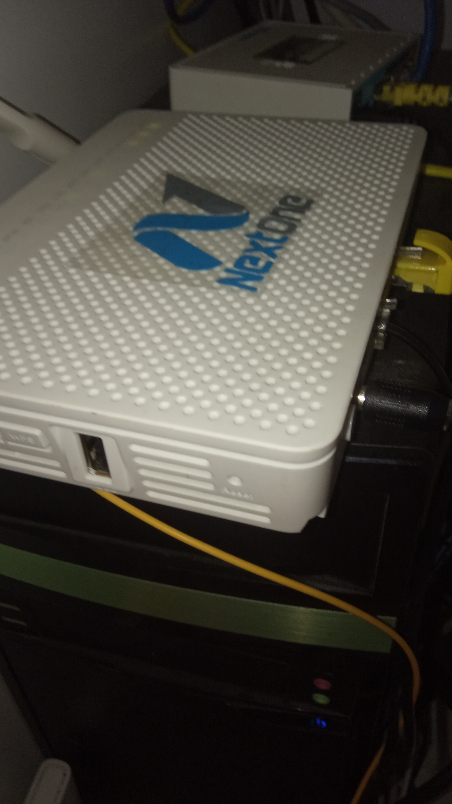
Hasil Pemasangan Modem Fiber
Sebagai seorang teknisi, saya harus memastikan hasil pemasangan perangkat Internet yang rapi dan berkualitas untuk memenuhi standar kualitas dan kepuasan klien.
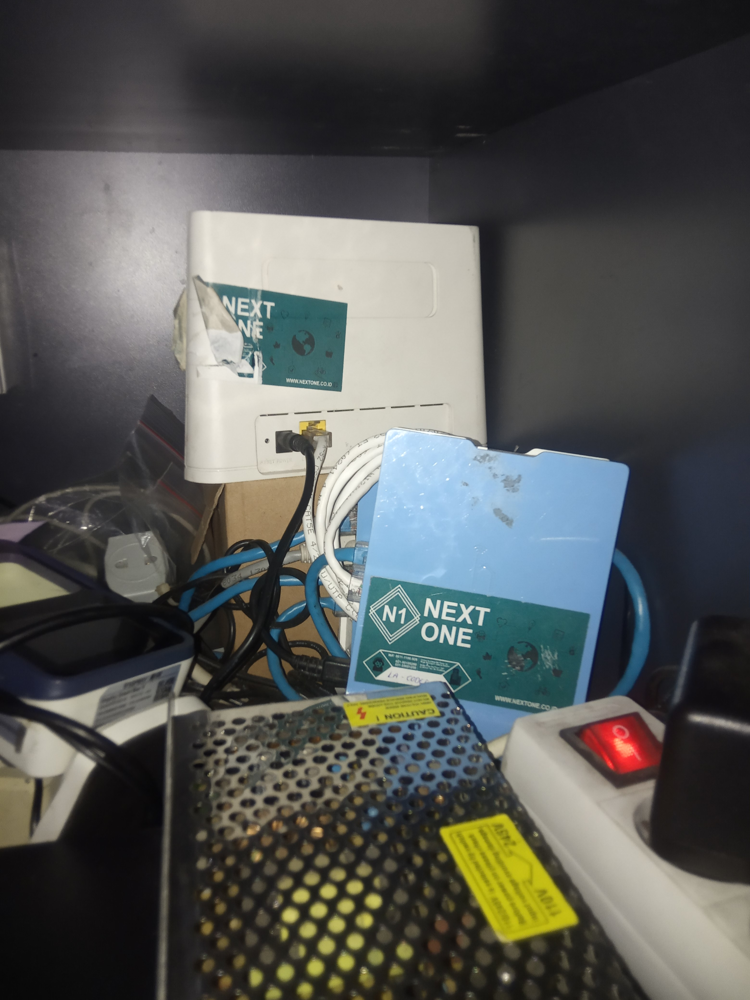
Hasil Pemasangan Modem Card
Saya juga bertanggung jawab dalam pemasangan modem card dan perangkat MikroTik sebagai solusi backup atau untuk outlet-outlet outdoor serta di mal yang tidak memiliki akses jalur fiber, memastikan infrastruktur jaringan tetap berjalan dengan lancar dan dapat diandalkan.
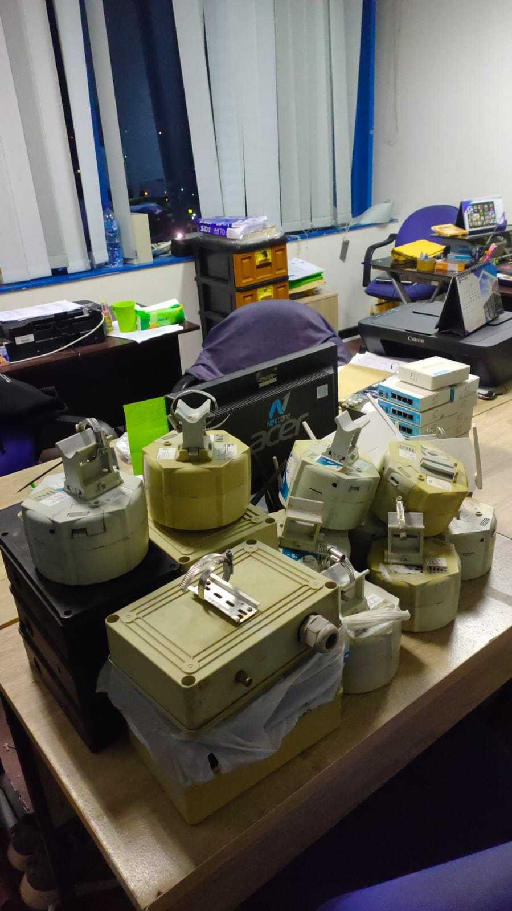
Beberapa Perangkat Yang Saya Gunakan
Selain melakukan pengaturan modem, saya juga bertanggung jawab untuk melakukan konfigurasi pada perangkat MikroTik seperti RB931haP mini, RB941, RBSXT, RBwAPR-2ND, dan berbagai merek akses point lainnya, memastikan infrastruktur jaringan beroperasi dengan efisien dan optimal sesuai kebutuhan klien.
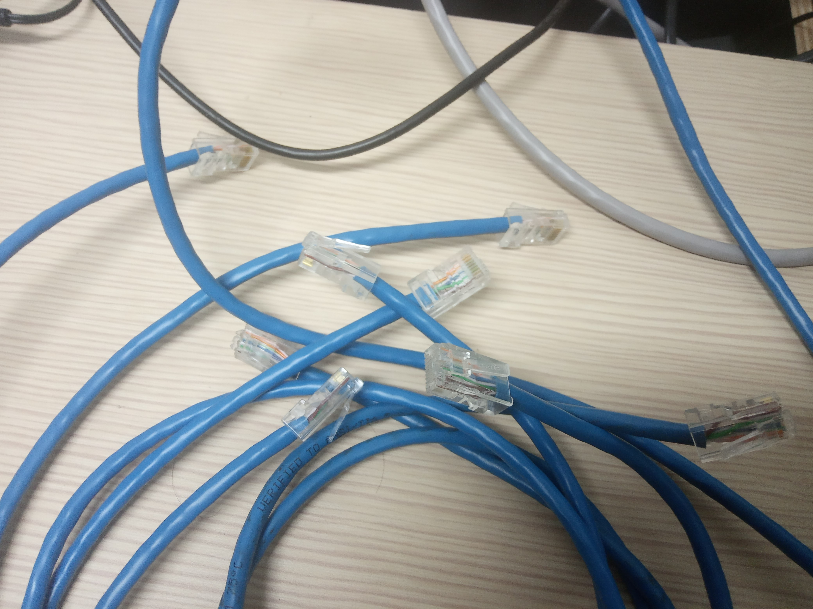
Crimping Lan
Sebagai seorang teknisi, saya juga melakukan pengecekan dan crimping ulang kabel LAN untuk memastikan aliran data berjalan lancar dan konsisten, sehingga infrastruktur jaringan dapat beroperasi secara optimal.

Membuat logo SMK 4 3D
Saya juga memiliki pengalaman dalam membantu sekolah untuk membuat logo 3D, menghadirkan desain yang kreatif dan menarik untuk memperkuat identitas visual mereka.
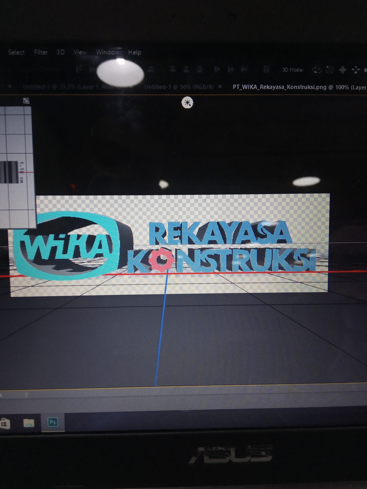
Membuat Logo WIKA 3D
Ketika saya menjalani magang di WIKA REKAYASA KONSTRUKSI, saya dipercaya untuk membuat model logo mereka dalam bentuk 3D, memberikan kontribusi yang berarti dalam mengembangkan identitas visual perusahaan tersebut.
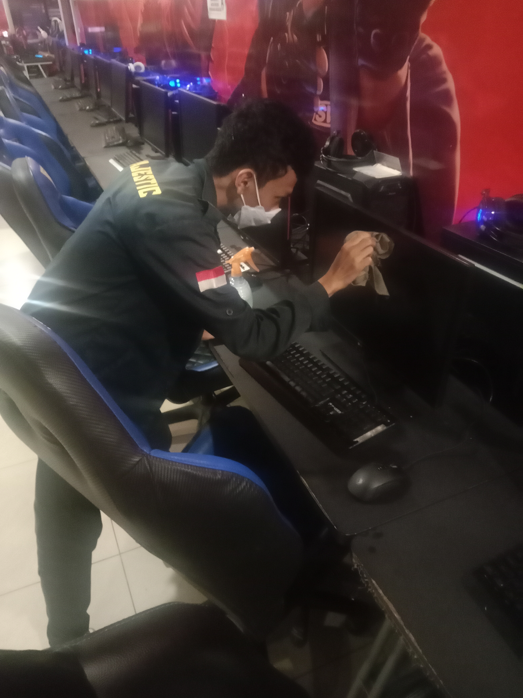
Membersihkan Perangkat
Sebagai Crew Store Internet Gaming Cafe di Gamer Village, tanggung jawab saya meliputi menjaga kebersihan ruang toko, kafe, warnet, toilet, serta perangkat yang ada, memastikan lingkungan yang bersih dan nyaman bagi para pengunjung untuk menikmati pengalaman gaming yang optimal.
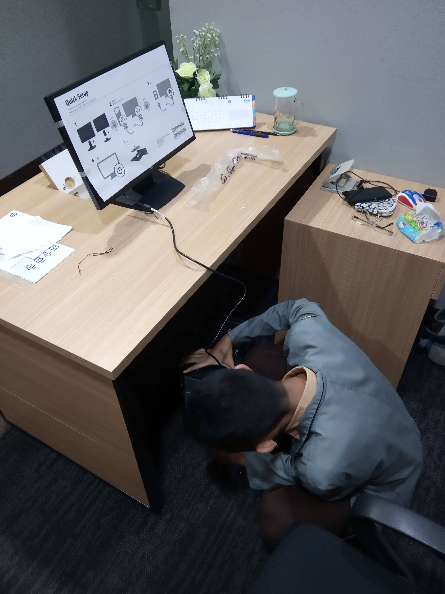
Pemasangan Perangkat Office
Ketika saya menjalani magang di WIKA REKAYA KONSTRUKSI, tugas saya meliputi penggantian perangkat yang digunakan oleh pengguna kantor dengan perangkat yang baru, memastikan ketersediaan infrastruktur teknologi yang handal dan sesuai dengan kebutuhan operasional perusahaan.
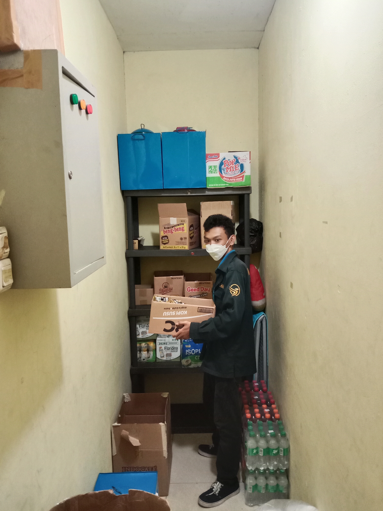
Melakukan Restock Gudang
Ketika bekerja di Gamer Village, tanggung jawab saya adalah memastikan stok barang sesuai dengan shift sebelumnya dan melakukan restok untuk shift saya, sehingga pengunjung dapat menikmati pengalaman gaming tanpa hambatan.
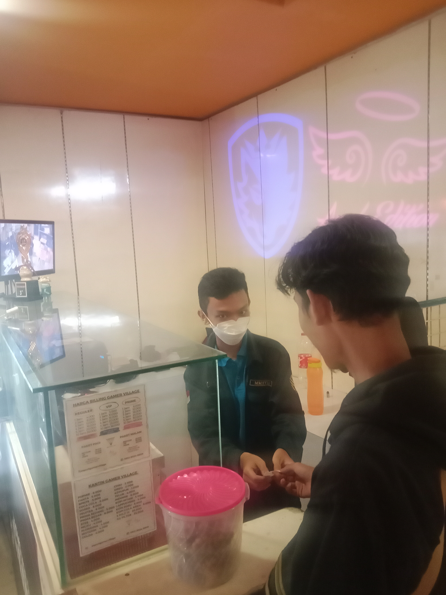
Melakukan Transaksi Dengan Pelanggan
Selain itu, di Gamer Village, saya juga bertanggung jawab memastikan bahwa transaksi berjalan lancar dan para pelanggan merasa puas dengan layanan yang diberikan, menciptakan pengalaman bermain yang menyenangkan dan memuaskan bagi semua pengunjung.
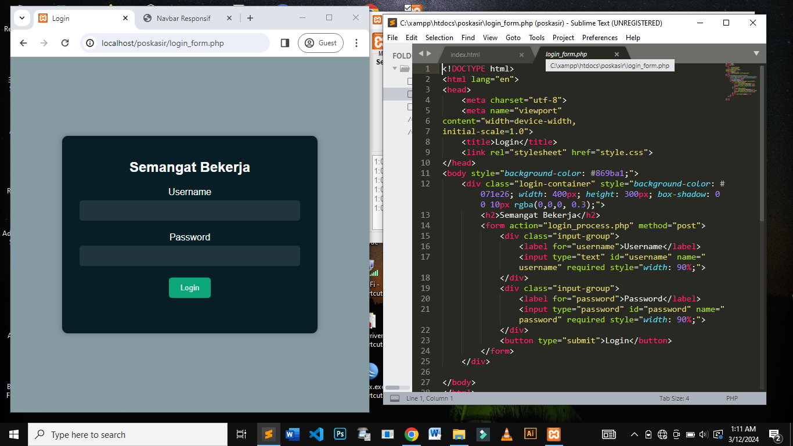
Membuat Form Login Untuk Aplikasi atau Web
Ketika saya menjalani magang di WIKA REKAYA KONSTRUKSI, saya ditugaskan untuk membuat sistem login dengan database MySQL. Untuk demo, Anda dapat melihatnya di https://youtu.be/NnFJDT2ykFY?si=yoEFDUmLZ3ID31vV.
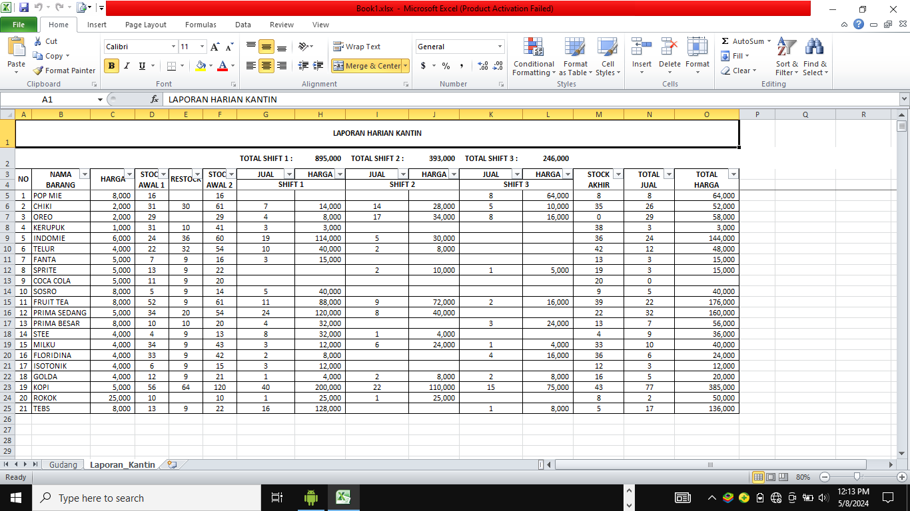
Membuat System Data Stock by Excel
Saya juga pernah ditugaskan untuk membuat sistem gudang menggunakan Excel, dimana saya memanfaatkan fungsi SUM, IF, dan VLOOKUP untuk mempermudah pembuatan laporan pergantian shift. Hal ini membantu dalam mengoptimalkan pengelolaan gudang dan penyusunan laporan dengan lebih efisien. Untuk demo bisa dilihat https://youtu.be/hUizKvtpLu0?si=qnNwTb0_DqoUxObr
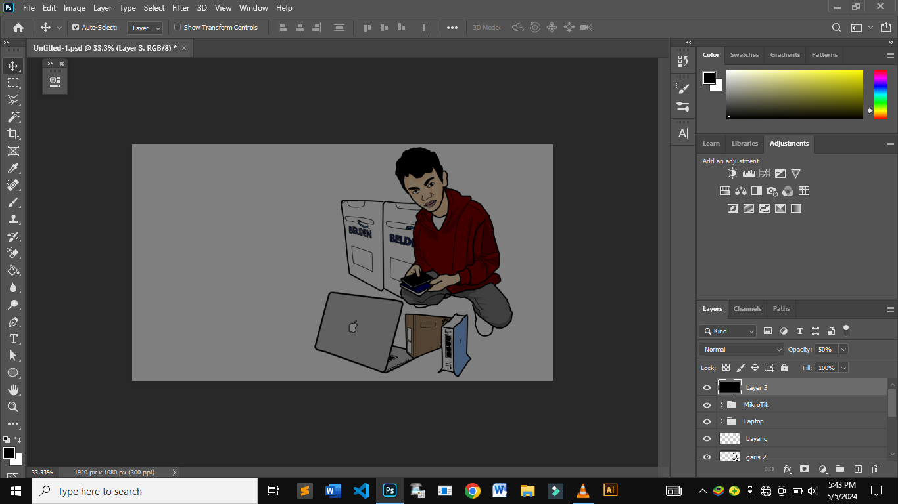
Membuat ART
Saya juga dapat membuat ilustrasi sederhana jika dibutuhkan :).
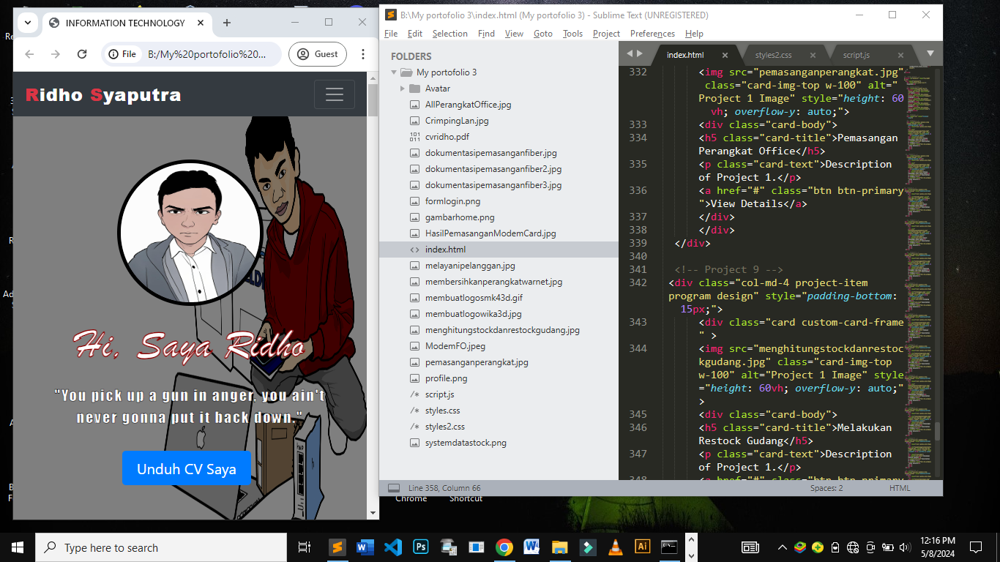
Membuat Web Portofolio Pribadi
Saya dapat membuat web portofolio pribadi statis menggunakan HTML dan CSS.
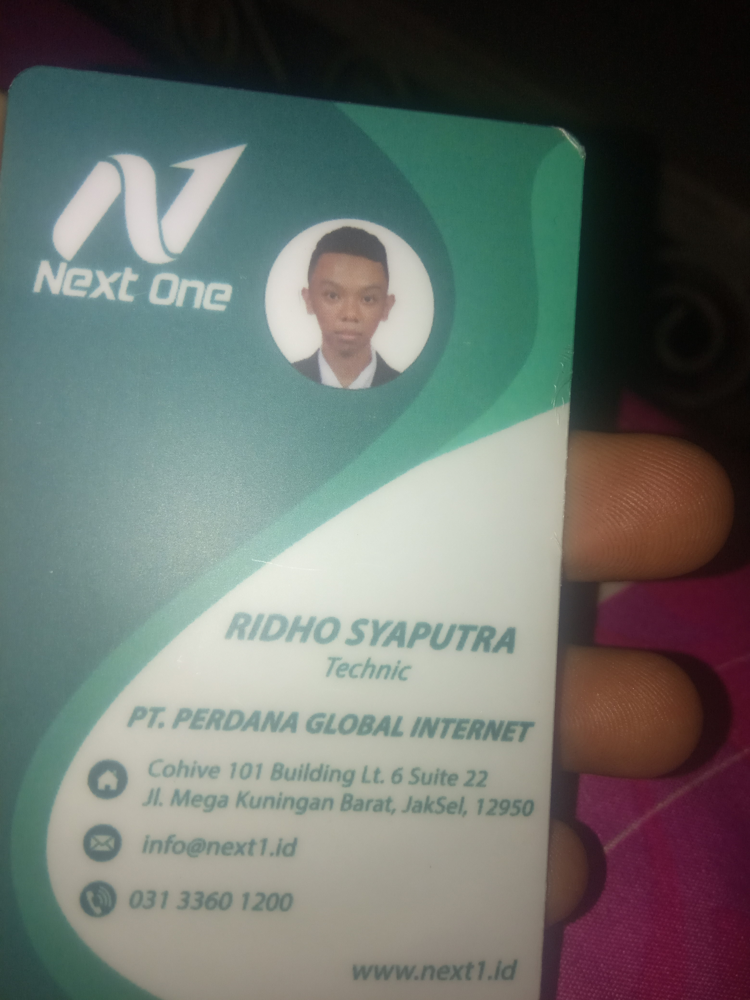
ID Card
Sebagai seorang teknisi, saya diwajibkan membawa ID card saat bertugas sebagai tanda pengenal resmi saya.

Akhir Magang
Part of journey is end
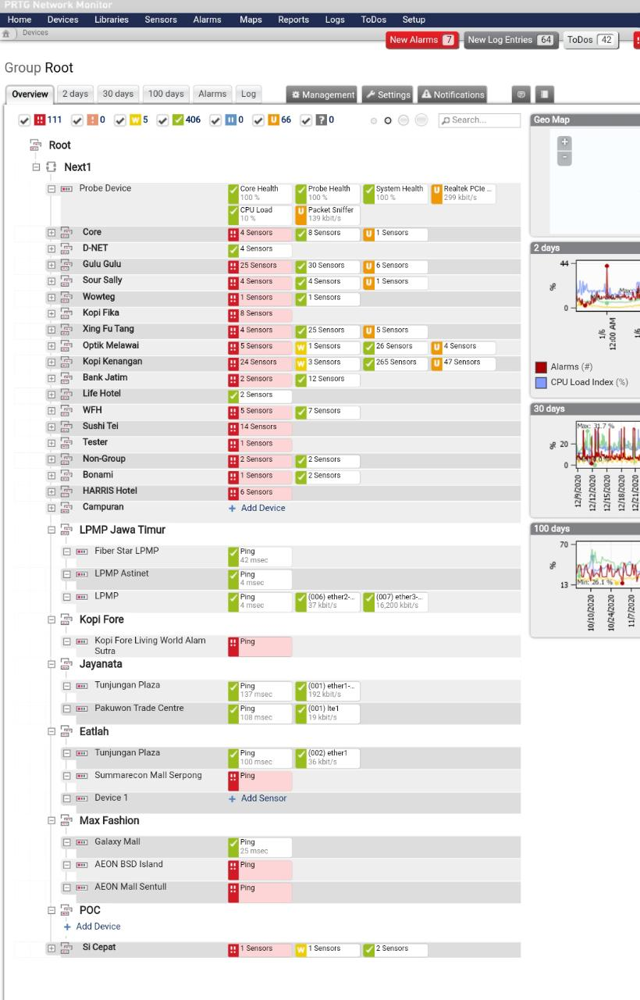
Monitoring Network
Ketika tidak ada pemasangan yang perlu dilakukan, saya diwajibkan untuk berada dalam posisi siaga, memantau jaringan internet klien dengan menggunakan PRTG.
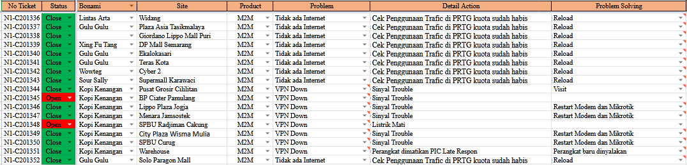
Laporan Monitoring Network
Saya juga bertanggung jawab untuk menyusun laporan harian mengenai masalah internet yang dialami oleh klien.
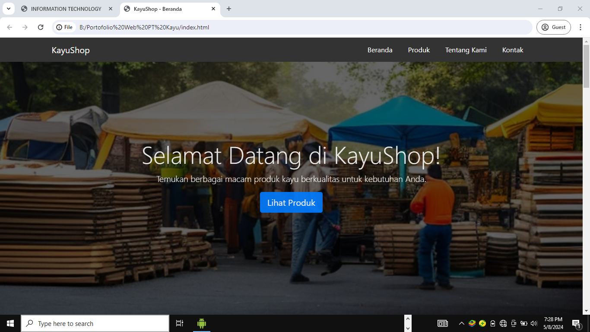
Pembuatan Web Untuk Identitas Pabrik Kayu
Saya pernah diminta oleh sebuah pabrik kayu untuk membuatkan sebuah website yang mencerminkan identitas perusahaan mereka. Untuk melihat demo, Anda dapat mengunjungi link https://youtu.be/NB8-4YLBKW8?si=T-m_6Wj06dEAYE_2.
×